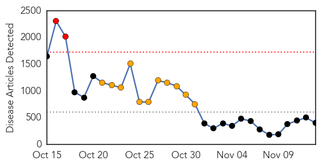
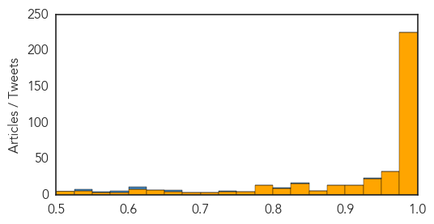

Cholera
30-Day Web Trend
2 alerts, 0 warnings
30-Day Twitter Trend
3 alerts, 0 warnings

Article Locations
Article Confidences

Top Articles:
Top Tweets:
-
No tweets found for Nov 13, 2014
Ebola
30-Day Web Trend
2 alerts, 11 warnings

30-Day Twitter Trend
5 alerts, 7 warnings
Article Locations

Article Confidences
Top Articles:
- 1.000
- Mali rushes to contain Ebola outbreak, Liberia signals progress
- 1.000
- WRAPUP 1-Ebola death toll tops 5,000; Mali quarantines 90
- 1.000
- Ebola fears leave nerves on edge in Southeast Asia
- 1.000
- Liberia president to end Ebola state of emergency
- 1.000
- Mali rushes to contain Ebola outbreak, Liberia signals progress
- 1.000
- Ebola death toll tops 5,000; Mali quarantines 90
- 1.000
- The U.S. Government Response to the Ebola Outbreak
- 1.000
- San Diego 6 News, The CW (XETV) – News, Weather, Traffic, Sports
- 1.000
- Ebola virus continues to pop up in new places: WHO
- 1.000
- New Tang Dynasty Television (NTD TV)
- 1.000
- WHO: More than 5,000 have died from virus
- 1.000
- Ebola related complications have claimed over 5,000 lives
- 1.000
- Doctor Who Contracted Ebola to Be Flown to Nebraska
- 1.000
- Ebola outbreak deaths pass 5,000
- 1.000
- Two New Ebola Deaths In Mali As West Africa Deaths Top 5,000
- 1.000
- Liberia President Ending Ebola State of Emergency
- 1.000
- Mali quarantines 90 after nurse's death as Ebola toll tops 5,000
- 1.000
- Untitled Article
- 1.000
- CRS official sees wins in Ebola fight, but there’s ‘a lot more to do’
- 1.000
- Ebola death toll passes 5,000-mark
- 1.000
- Ebola worries ebb in Liberia, but rise in Mali (+video)
- 1.000
- Ebola patient from Sierra Leone heading to Nebraska
- 1.000
- Liberia ends Ebola emergency; Mali cluster grows
- 1.000
- Individual genetic differences may affect Ebola survival: study
- 1.000
- WHO says more than 5,000 have now died of Ebola
- 1.000
- Health Board: Be more concerned with flu than Ebola
- 1.000
- Ebola death toll passes 5,000-mark: WHO
- 1.000
- Mali quarantines 90 over Ebola
- 1.000
- Liberia president to end Ebola state of emergency - MyNorthwest
- 1.000
- Russia allocates $20 million to fight Ebola virus disease, vaccine is being developed
- 1.000
- Ebola outbreak: Clinical trials to start next month
- 1.000
- Ebola outbreak deaths pass 5,000
- 1.000
- Another US Doctor Contracts Ebola in West Africa
- 0.999
- Ebola workers ask Congress for help
- 0.999
- Response to Ebola Needs Flexibility, Experts Say
- 0.999
- Response to Ebola needs flexibility, experts say
- 0.999
- Northern California Kaiser nurses strike ends
- 0.999
- Ebola death toll tops 5,000; Mali quarantines 90
- 0.999
- Ebola death toll tops 5,000; steep rise in Sierra Leone cases, says WHO
- 0.999
- Expert: Travelers from non-Ebola areas aren’t threat
- 0.999
- Ebola death tolls tops 5 000
- 0.999
- Ebola workers ask Congress for help
- 0.999
- Ebola update: Liberia sees progress, while Mali announces border checks
- 0.999
- Ebola Death Toll Tops 5,000; Mali Quarantines 90
- 0.999
- Ebola crisis: Liberian president Ellen Johnson Sirleaf lifts state of emergency
- 0.999
- #Ebola death toll crosses 5,000 mark
- 0.999
- Ebola aid workers ask Congress for help
- 0.999
- WHO says more than 5 000 have now died of Ebola
- 0.999
- PH health workers join global protest on lack of awareness vs Ebola « Bulatlat
- 0.999
- Sierra Leone to pay families of health workers who die of Ebola
Showing top 50 articles...
Top Tweets:
- 0.942
- RT: Desde en Caracas - Venezuela nos unimos a la causa africastopebola... ¡No mas Ebola en África! htt…
- 0.939
- RT: Flu & Ebola have some similar symptoms. Flu is common, Ebola is very rare. http://t.co/QTmauZZdUF getafluvax http://t.co/doVp…
- 0.912
- SMS service tackles Ebola in Sierra Leone, expands in West Africa ebolaresponse http://t.co/tE6nFHnShu
- 0.892
- Ebola Deeply takes a close look at MSF's experimental Ebola drug trials http://t.co/dVpbTiuSjE
- 0.880
- Good read: @maureentaylor31 on the leadership crisis of the Ebola outbreak. Don Low & Sheela Basrur are missed http://t.co/KjS6fhXIqD
- 0.878
- FAQ. Ebola Virus in pets http://t.co/tDfwzbjTlv
- 0.867
- Ebola in 3D: @NPR on the video game that guides health workers through an Ebola ward http://t.co/PM5b9dFUMM
- 0.839
- RT: 97 confirmed and probable Ebola cases reported in Liberia last week. After decline in new cases, now seems to be spreading at …
- 0.817
- RT: BREAKING First Ebola treatment trials to start in West Africa
- 0.799
- RT: [INDEPENDENT] Ebola: Sierra Leone to pay families of health workers who die of virus $5,000 http://t.co/HTYm2K6O6v EBOLANE…
- 0.783
- Rage Against the Ebola Crematorium. http://t.co/RhvUJIIzZ8
- 0.749
- RT: Unsafe burial practices are a major cause of new Ebola cases in Sierra Leone. This week's EbolaBigIdea is SAFE BURIALS SAVE L…
- 0.704
- First Outbreak Quashed, Ebola Reappears in Mali. http://t.co/Vl4JQOST4u
- 0.698
- 1/3) @UNBanbury tells media: @UN's Ebola strategy working but principal challenge is virus' wide geographic spread http://t.co/Uy5dfLLwCZ
- 0.686
- Ebola: experimental drug trials to go ahead in west Africa http://t.co/abp6MaHgj8
- 0.686
- Ebola: experimental drug trials to go ahead in west Africa http://t.co/mbAWmzAdP0
- 0.666
- RT: Exciting news about MSF starting treatment trials for Ebola. Happy there is no use of placebos. Patients deserve best ch…
- 0.657
- MSF to start West Africa experimental Ebola drug trials in December http://t.co/SHZbpS0C7S
- 0.649
- RT: Mali - Girl 4th Ebola fatality in Bamako - Media report http://t.co/DpVcSOAPnr … Ebola
- 0.629
- “Your Blood Tested Positive for Ebola. I Am Sorry.” @billgates http://t.co/FUv2f4DfVM
- 0.629
- ‘Isolate Ebola, Not Countries Affected’ @UNMILNews http://t.co/H7xthCMEGE
- 0.615
- RT: There were more cases on Ebola in Oct. than in all of Ebola history -@DrFriedenCDC: http://t.co/NRNyO3texB GSF2014 http://t.co/R…
- 0.614
- RT: In Liberia, a nonprofit uses radio to help students learn while schools are closed due to ebola http://t.co/spgbuJaub6
- 0.593
- RT: The US is Ebola-free now, but the latest outbreak in Mali demonstrates that Ebola remains tragic and hard to predict. http://…
- 0.591
- RT: CDC Disease Detective Describes Chasing Ambulances as Part of Ebola Response http://t.co/dgFvX8Ccv1
- 0.589
- .@Only4RM W. Africa countries w/Ebola outbreaks have limited capacity to collect & screen blood.
- 0.574
- Officials Consider Scaling Back of Ebola Centers in Liberia http://t.co/hdWavFY1D1
- 0.569
- RT: "There is no simple solution to the Ebola crisis" - here's a summary of how the Wellcome Trust is tackling Ebola http:/…
- 0.564
- RT: New update on Ebola is out: 14098 cases, 5147 deaths. http://t.co/angNkEzfhk
- 0.564
- Ebola death toll surpasses 5,000 worldwide http://t.co/FR7DHpXK1z via
- 0.549
- RT: Right strategy in place to address Ebola, but need emergency funding to stop Ebola. More info here on our request: http://…
- 0.549
- RT: Right strategy in place to address Ebola, but need emergency funding to stop Ebola. More info here on our request: http://…
- 0.531
- Mali faces complex contact tracing challenge in second, larger Ebola outbreak http://t.co/aMINH8Ao2M
- 0.525
- Liberia lifts state of emergency, adjusts Ebola curfew http://t.co/G5nrx4Nz47
- 0.510
- Ebola and the Lost Children of Sierra Leone http://t.co/OeogV5l2wL
- 0.501
- UNWebcast. Dr. @DavidNabarro, UN Special Envoy on Ebola http://t.co/psddEaeSmV